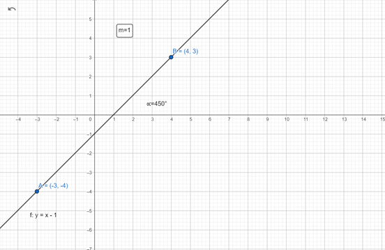
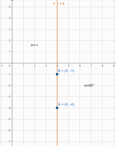

- Halla la pendiente y ángulo de inclinación de las siguientes rectas que unen los pares de puntos siguientes.
Sistema de Coordenadas Cartesianas
Pendiente y ángulo de inclinación
Pregunta de Elección Múltiple
Solución
Solución
Actividad de GeoGebra
· Dibuja la gráfica con los componentes necesarios.
(A continuación te presento una guía de como debe quedar la gráfica)

Pregunta de Elección Múltiple
Actividad de GeoGebra
· Dibuja la gráfica con los componentes necesarios.
(Te dejo una gráfica de referencia)

Obra publicada con Licencia Creative Commons Reconocimiento Compartir igual 4.0